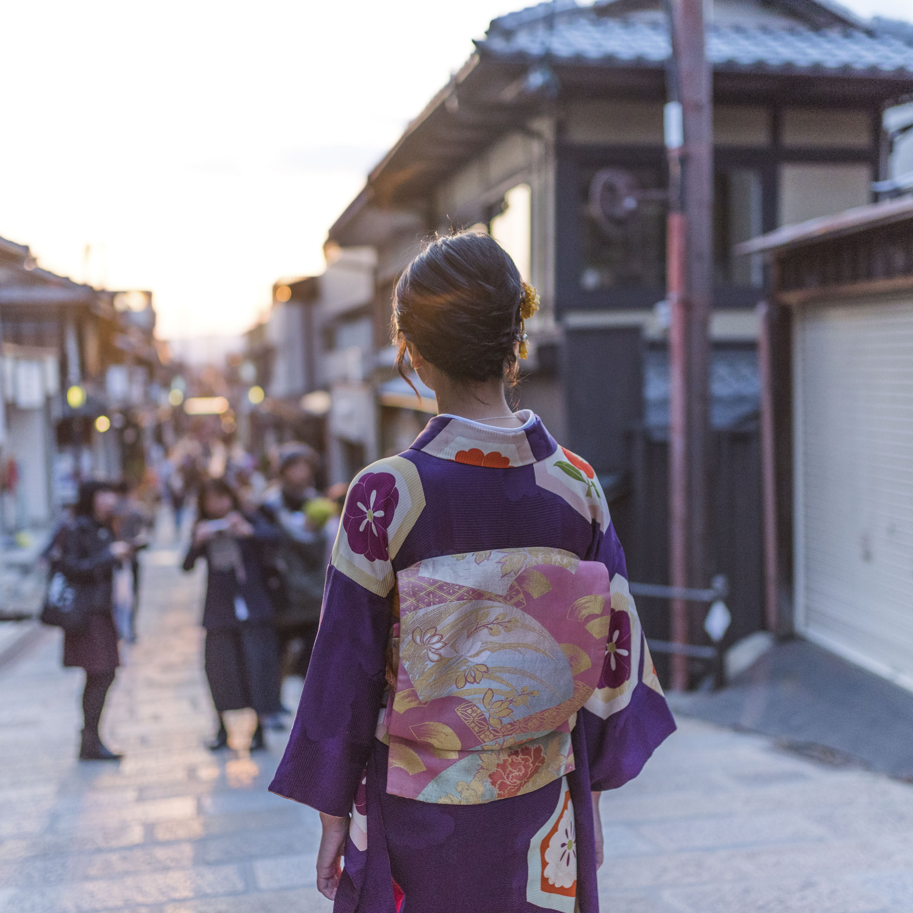

Welcome
to heart Abroad
Inspiring curious minds and adventurous hearts.
I aim to share the beauty and culture of Japan, spreading love and appreciation for my heart and home abroad.
EATS

Are you a fan of street food? Fried food and desserts? Taiyaki are common...
Casual family restaurants are super common in Japan. Here are 5 places you can...
SIGHTSEEING
Tori can be found all over Japan. The one on Miyajima island is known for reflecting beaut...

The busy streets of Tokyo may call to you with shops and treats, but the natural sight...
TIPS/TRICKS

Are you a fan of street food? Fried food and desserts? Taiyaki are common...

Casual family restaurants are super common in Japan. Here are 5 places you can...